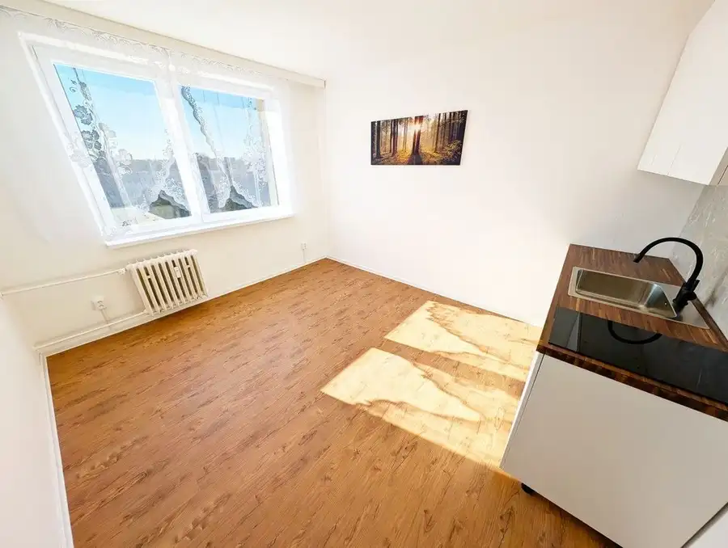
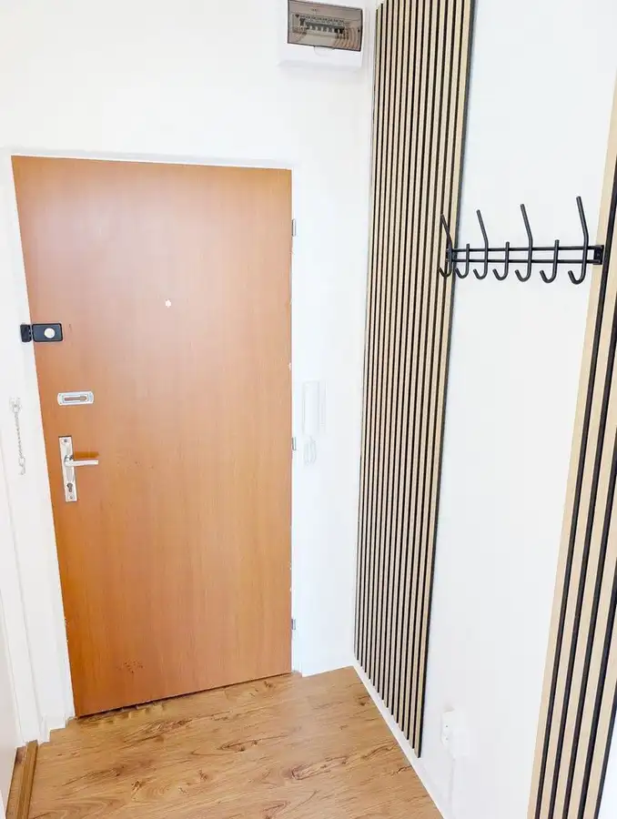
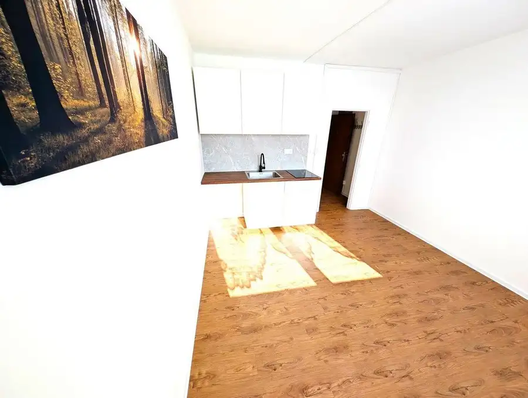
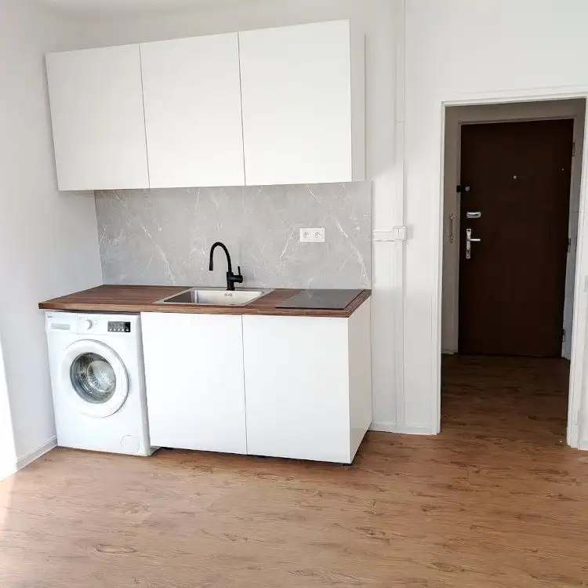
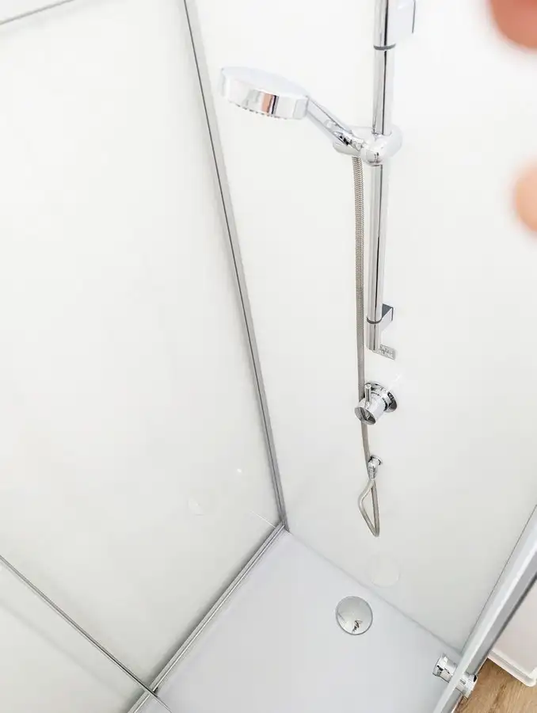
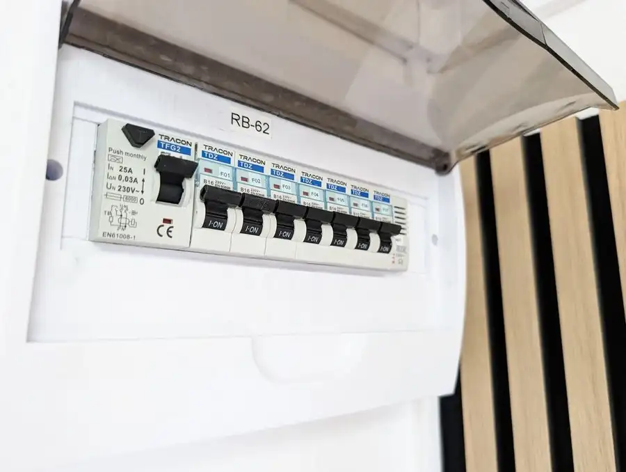
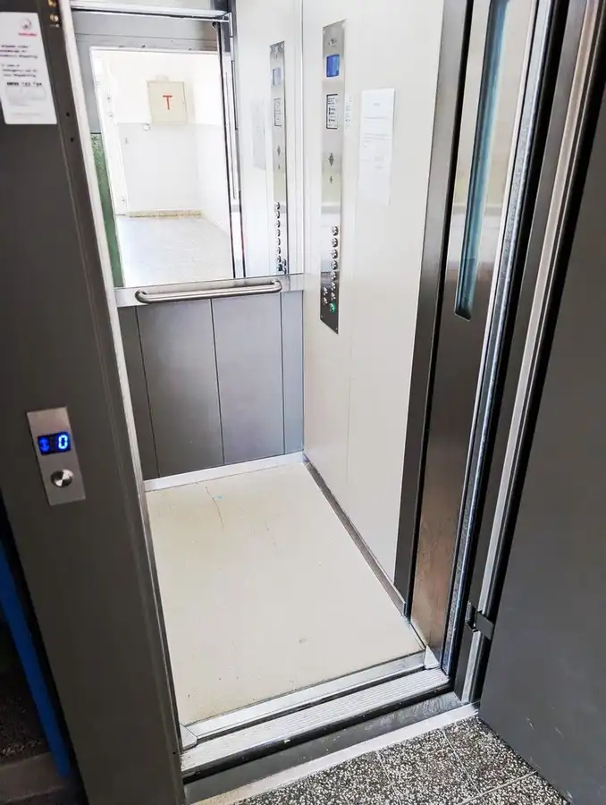

PLAN Real | Slnečná garzónka na predaj – Pošeň, Ružinov
Ružinov, Bratislava







- Plocha20 m²
- Poschodie6. z 7
- StavKompletná rekonštrukcia
- Energetická triedaB
O nehnuteľnosti
Ponúkam Vám výnimočnú príležitosť na kúpu kompletne zrekonštruovanej garsónky, ktorá je ideálnym štartovacím bývaním alebo skvelou investíciou na prenájom.Byt sa nachádza na 6. poschodí v 7. poschodovom bytovom dome.Celková výmera bytu je 19,3 m², orientácia na juh.Mesačné náklady sú len 70 EUR, čo z tejto nehnuteľnosti robí mimoriadne úsporné bývanie.Rekonštrukcia a vybavenie:– zrekonštruovaná kúpeľňa, WC– nová elektroinštalácia vrátane revíznej správy– nová kuchynská linka s veľkým dresom a indukčnou varnou doskou– viac bodové bezpečnostné dvere– predpríprava na práčkuLokalita:Byt sa nachádza v časti Ružinov - Pošeň, ktorá patrí medzi najpokojnejšie a najvyhľadávanejšie lokality Ružinova.V bezprostrednej blízkosti sa nachádza Lidl, lekáreň, reštaurácie, kaviarne, ako aj zastávky MHD a električiek - všetko dostupné pešo bez potreby auta.Okolie ponúka množstvo zelene, parkov a oddychových zón na relax.Chcete pri kúpe získať najvýhodnejšiu hypotéku na trhu?Chcete zároveň predať Váš byt?Máte ďalšie otázky?Teším sa na Vás.Ing. Martin Řičánek0907 45 47 48ricanek@planreal.sk
Parametre
- Cena vrátane energií
- Nie
- Druh
- Garsónka
- Dátum zverejnenia
- 18. 11. 2025
- Energetický certifikát budovy
- B
- Orientácia
- Južná
- Podlažie
- 6
- Počet nadzemných podlaží
- 7
- Rok poslednej rekonštrukcie
- 2025
- Rok výstavby
- 1967
- Stav nehnuteľnosti
- Kompletná rekonštrukcia
- Typ
- Predaj
- Typ konštrukcie
- Panelová
- Úžitková plocha
- 20 m²